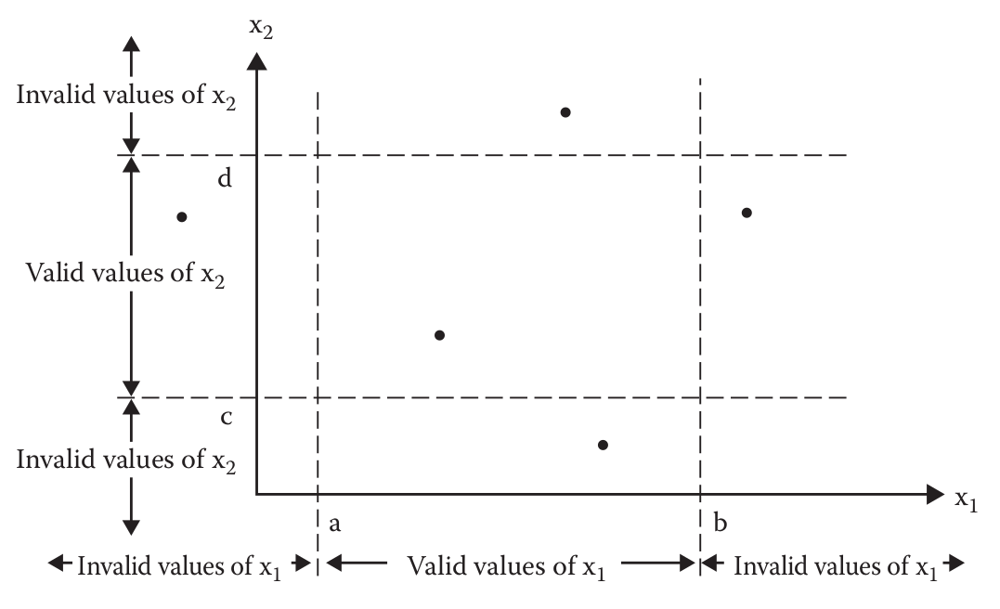

50.003 - Specification-based Unit Testing¶
Learning Outcomes¶
By the end of this unit, you should be able to
- Explain the differences between Specification-based testing and code-based testing
- Identify different levels of testing based on the design abstraction level
- Develop specification-based unit testing using boundary value testing
- Develop specification-based unit testing using equivalence class testing
- Develop specification-based unit testing using decision table testing
Types of testing¶
Depending on how the test cases being identified and defined, we find two types of testings
Specification-based Testing¶
In specification-based testing, the test subject is treated as a function that maps values from its domain (input) into values in its co-domain (output). The mapping can be defined as a mathemethical relation according to the specification. Specification-based testing is also known as black box testing, as the test cases are defined without the knowledge of the internal implementation of the test subject. One main advantage of specification-based testing is that it focuses the test effort on the actualization of the specification, i.e. building up confidence. In some literature, specification-based testing is also called functional testing.
Code-based Testing¶
On the other hand, one could define test cases by exploiting the knowledge of the internal structure and algorithm used in the target program. This type of testing is called code-based testing. Code-based testing is also known as white box testing. The main advantage of code-based testing is that it tries to ensure all the written codes are covered by the test, i.e. fault finding. In some literature, code-based testing is also called structural testing.
Levels of testing¶
Recall from the earlier lesson, software design often uses abstraction. Based on different levels of design abstractions, we identify the correspondent level of testings.
| Design abstraction level | Testing level |
|---|---|
| Requirement Specifications | System testing |
| Preliminary Design | Integration testing |
| Detailed Design | Unit testing |
- Unit testing - test individual smallest units of the system.
- Integration testing - test related units/subcomponents of the system, which are related (according to the system design)
- System testing - test the system as a whole, (often according to the user cases).
Unit Testing¶
Unit Testing is the test conducted against a software system in the smallest granularity. The smallest granularity is loosely defined. Depending on the choice of detailed design, implementation, programming language and framework, a unit can be either
- A function
- A class
- A module
- A UI component
Specification-based Unit Testing¶
The following are some common techniques of defining test cases of specification-based unit testing
- Boundary value testing
- Equivalence class testing
- Decision table testing
Based on the type, the domain and the dependencies of the inputs, we shortlist the techniques which more appropriate
| Assumption on input | Techniques |
|---|---|
| Numerical value, ordinal value | boundary value, equivalence class |
| Inputs are independent | boundary value, equivalence class |
| Inputs are depenedent | Decision table |
Boundary Value Testing¶
In Boundary value testing, to define the test cases, we analyse the inputs to the test subject by identifying
- what are the input variables.
- what are the valid ranges.
For example, consider a function f(x1,x2) takes two arguments x1 and x2 and compute some output. Based on the specification, we note that the following conditions should apply
If we plot out a graph

The grey region denotes the domain of function f.
One way to generate test case based on the given domain of f is to identify the boundaries of the grey region and we pick the values from the boundary
The rationale behind the boundary value testing is that errors tend to occur near the extreme values of its inputs, e.g. starting/ending indices of an array, off-by-one errors in a loop, etc.
Normal Boundary Value Testing¶
We consider the following two assumptions.
- assuming that our source language is strongly type and the type checker would reject values of the inputs out side of the domain.
- assuming when an error occurs it is solely caused by one of the inputs but not both.
With these two assumptions, we can select values as input for testing as
where \(x^{min}_1 = a, x^{max}_1 = b, x^{mean}_1 = (b-a)/2\) \(x^{min}_2 = c, x^{max}_2 = d, x^{mean}_2 = (d-c)/2\)

Example¶
Consider the following function
Applying Normal Boundary Value Test, We identify the following test cases
| id | h | stz | ttz | expected output |
|---|---|---|---|---|
| 1 | 0 | 1 | 1 | [0,0] |
| 2 | 1 | 1 | 1 | [1,0] |
| 3 | 11 | 1 | 1 | [11,0] |
| 4 | 22 | 1 | 1 | [22,0] |
| 5 | 23 | 1 | 1 | [23,0] |
| 6 | 11 | -12 | 1 | [0,1] |
| 7 | 11 | -11 | 1 | [23,0] |
| 8 | 11 | 13 | 1 | [23,-1] |
| 9 | 11 | 14 | 1 | [22,-1] |
| 10 | 11 | 1 | -12 | [22,-1] |
| 11 | 11 | 1 | -11 | [23,-1] |
| 12 | 11 | 1 | 13 | [23, 0] |
| 13 | 11 | 1 | 14 | [0, 1] |
Robust Boundary Value Testing¶
If we drop the first assumption, we should also include the out of range values in our test cases, namely besides the 9 tuples listed earlier, we include the following

Example¶
If we apply Robust Boundary Value Testing to the previous example i.e. tzconvert() function , we identify a few extra test cases as follows
| id | h | stz | ttz | expected output |
|---|---|---|---|---|
| 14 | -1 | 1 | 1 | invalid |
| 15 | 24 | 1 | 1 | invalid |
| 16 | 11 | -13 | 1 | invalid |
| 17 | 11 | 15 | 1 | invalid |
| 18 | 11 | 1 | -13 | invalid |
| 19 | 11 | 1 | 15 | invalid |
Worst Boundary Value Testing¶
If we drop the second assumption, we need to consider those points near the "corners".
For Normal Worst Boundary Value test, we include

For Robust Worst Boundary Value test, we include,

Exercises (Non graded)¶
Can you find out what are the extra test cases generated if we apply Robust Worst Boundary Value Testing to the tzconvert() function?
Equivalence Class Testing¶
One issue with Boundary Value Testing is that there could be too many test cases and many of them could be redundant.
The intuition of the equivalence is to avoid redundancy in test cases and yet to offer a complete test.
The term equivalence class refers to the math definition of equivalence relation in set theory. Given Given a domain \(A\), a relation \(R \subseteq A \times A\) is a equivalence relation iff \(R\) is reflexive, symmetric and transitive. We can think of \(R\) defines a partition peer relation. For instance, we have
- for any \(a \in A\), \(a R\ a\), i.e. \(a_i\)s are in its own partition
- for any \(a_1, a_2 \in A\), we have \(a_1 R\ a_2\) implies \(a_2 R\ a_1\), i.e. if \(a_1\) in the partition of \(a_2\), then \(a_2\) is in the parition of \(a_1\).
- for any \(a_1, a_2, a_3 \in A\), we have \(a_1 R\ a_2\) and \(a_2 R\ a_3\) imply \(a_1 R\ a_3\), i.e. if \(a_1\) and \(a_2\) are in the same partition, and \(a_2\) and \(a_3\) are in the same partition, then \(a_1\) and \(a_3\) are in the same partition.
Equivalence class testing means to test with an element from each input partition. For example, recall the previous example, we would pick one point for each cell in "grid"

Note that in the Strong Robust Equivalence Class Testing , we would include the dots from the top-left, top-right, bottom-left and bottom-right cells.
Example¶
For instance if we apply Equivalence Class Testing (not strong robust) to the tzconvert() function, we only need to consider test cases 3, 14, 15, 16, 17, 18, 19.
If we argue that the valid test cases are too fews, we could further partition the valid input region, into 2 or 4 sub regions.
As we can observe equivalence class testing help to reduce the number of cases based on the assumption that data points in the same partition yield the same outcome. Its reliability depends on how to partitions.
Decision Table Testing¶
When there exists some dependency among the inputs, it is more applicable to use Decision Table Testing.
Consider the following function
Applying boundary value testing and equivalence class testing might not make too much sense in this case, since the domain (partitions) are not well defined, e.g. there are too many special cases. For instance,
- Feb 28 days in non-leap years, 29 days in leap years;
- Jan, Mar, May, Jul, Aug, Oct, Dec have 31 days, while Apr, Jun, Sep and Nov have 30 days;
- Years that not in
dd00patterns and can be divisible by 4 are leap years, Given a Year indd00pattern andddis divisible by 4 then the year is leap.
Let's define
- M1 = {month: month has 30 days}
- M2 = {month: month has 31 days except December}
- M3 = {month: month is December}
- M4 = {month: month is February}
- D1 = {day: 1 \(\leq\) day \(\leq\) 27}
- D2 = {day: day = 28}
- D3 = {day: day = 29}
- D4 = {day: day = 30}
- D5 = {day: day = 31}
- Y1 = {year: year is a leap year}
- Y2 = {year: year is a common year}
We list down the input constaints combination and output possibilities in a table
| ~ | 1 | 2 | 3 | 4 | 5 | 6 | 7 | 8 | 9 | 10 |
|---|---|---|---|---|---|---|---|---|---|---|
| m | M1 | M1 | M1 | M1 | M1 | M2 | M2 | M2 | M2 | M2 |
| d | D1 | D2 | D3 | D4 | D5 | D1 | D2 | D3 | D4 | D5 |
| y | - | - | - | - | - | - | - | - | - | - |
| actions | ||||||||||
| impossible | X | |||||||||
| d+1 | X | X | X | X | X | X | X | |||
| d=1 | X | X | ||||||||
| m+1 | X | X | ||||||||
| m=1 | ||||||||||
| y+1 |
| ~ | 11 | 12 | 13 | 14 | 15 | 16 | 17 | 18 | 19 | 20 | 21 | 22 |
|---|---|---|---|---|---|---|---|---|---|---|---|---|
| m | M3 | M3 | M3 | M3 | M3 | M4 | M4 | M4 | M4 | M4 | M4 | M4 |
| d | D1 | D2 | D3 | D4 | D5 | D1 | D2 | D2 | D3 | D3 | D4 | D5 |
| y | - | - | - | - | - | - | Y1 | Y2 | Y1 | Y2 | - | - |
| actions | ||||||||||||
| impossible | X | X | X | |||||||||
| d+1 | X | X | X | X | X | X | ||||||
| d=1 | X | X | X | |||||||||
| m+1 | X | X | ||||||||||
| m=1 | X | |||||||||||
| y+1 | X |
Rows above actions are the combinations of input constgraints Rows below actions are the output possibilities.
Based on the above table, we can generate the test cases by randomly generate
a set of d, m and y that satisfy the rule id, as follow
| id | d | m | y | expected output | rule id |
|---|---|---|---|---|---|
| 1 | 10 | 4 | 1999 | 11,4,1999 | 1 |
| 2 | 28 | 6 | 2001 | 29,6, 2001 | 2 |
| ... |